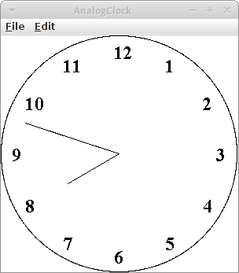
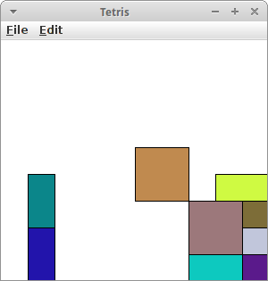

Agrar
In diesem Kapitel fängt es an richtig interessant zu werden. Im letzten Kapitel haben wir den Top-Down Ansatz auf Kosten von Variablen etwas vernachlässigt, aber in diesem Kapitel werden wir sehen wie wir mit Methoden wieder zum Top-Down Ansatz zurückfinden. Und wir werden unsere ersten Animationen für Spiele schreiben.
.
Methoden
Wir kennen Methoden schon relativ lange, bei Karel haben wir sie noch Kommandos genannt, z.B. move(), turnLeft() und frontIsClear(). Auch in GraphicsPrograms haben wir sie benutzt, damals hießen sie auch Nachrichten die wir an ein GRect schicken, z.B. setColor() und setFilled(). Selbst bei ConsolePrograms hatten wir sie, z.B. readInt() und println(). Also nix neues.
Bei Karel gab es aber die coole Möglichkeit neue Kommandos zu erfinden, wie z.B. turnRight() oder moveToWall(). Das haben wir damals so gemacht:
public void turnRight() {
turnLeft();
turnLeft();
turnLeft();
}
Wäre es nicht auch cool gewesen, wenn wir in unserem Target Programm folgendes neues Kommando hätten haben können:
public void drawCircle( int radius, Color color ) {
...
}
oder für unser Wall Programm wäre eine Methode wie die folgende ganz praktisch gewesen:
public void drawRowOfNBricks( int numberOfBricks ) {
...
}
Nun das schöne ist, das geht tatsächlich!
SEP: Methoden tun immer etwas, deswegen sollten Methoden immer Tunwörter, also Verben, sein.
.
Neue Methoden definieren
Eine neue Methode anzulegen ist genauso einfach wie Karel neue Kommandos beizubringen. Der allgemeine Syntax einer Methodendeklaration ist folgender:
visibility type name( parameters ) {
... body...
}
Dabei bedeutet
- visibility: die Sichtbarkeit der Methode, dies ist meist entweder private oder public
- type: der Datentyp den die Methode zurückgibt, auch Rückgabewert genannt. Sehr häufig ist das void, was soviel heißt wie nichts, also die Methode gibt nichts zurück
- name: der Name der Methode, hier gelten die gleichen Regeln wie für Variablen und er sollte auch immer klein geschrieben werden
- parameters: die Übergabe Parameter. Die sind neu, die gab es bei Karel noch nicht, die sind aber super praktisch wie wir gleich sehen werden
SEP: Wenn möglich sollte die Sichtbarkeit von Methoden private sein.
.
Übung: Archery
Schauen wir uns unser Archery Programm noch einmal an. Aber jetzt versuchen wir es mit Hilfe der Methode drawCircle( int radius, Color color ). Wir werden feststellen, dass der Code viel kürzer und auch lesbarer wird.
private void drawCircle(int radius, Color color) {
GOval ring = new GOval(2 * radius, 2 * radius);
ring.setColor(color);
ring.setFilled(true);
int x = 75 + 72 - radius;
add(ring, x, x);
}
.
 Übung: Wall
Übung: Wall
Versuchen wir uns noch einmal an dem Wall Program, aber jetzt mit Hilfe von Methoden. Wir wollen also eine Mauer bestehend aus 15 Backsteinen (GRect) errichten. Dabei wollen wir aber die Methode
private void drawOneRowOfStones(int y) {
int x = 50; // beginning x position of wall
for (int i = 0; i < 5; i++) {
GRect brick = new GRect(30, 15);
add(brick, x, y);
x = x + 30;
}
}
verwenden.
Frage: Enthält die Methode Zauberzahlen (magic numbers)? Können wir das ändern?
.
Rückgabewert
Bisher habe wir nur Methoden gesehen, die nichts (void) zurückgeben. Es gibt aber auch Methoden die etwas zurückgeben. Meistens rechnen die Methoden etwas aus, und geben das Resultat als Rückgabewert zurück. Ein schönes Beispiel ist die folgende Methode die zurückgibt wieviel Inches in einer gegebenen Anzahl von Feet sind:
private double feetToInches(double feet) {
double inches = 12 * feet;
return inches;
}
Wir können diese Methode jetzt in einem ConsoleProgram verwenden.
.
Übung: ConvertFeetToInches
Wir wollen ein kleine ConsoleProgram schreiben, das Feet nach Inches konvertiert. Dazu fragt es den Benutzer nach einer Anzahl von Feet mittels readDouble() und ruft dann unsere feetToInches() Methode auf und gibt das Resultat im KonsolenFenster aus.
double feet = readDouble("Enter feet: ");
double inches = feetToInches(feet);
println(feet + " feet are " + inches + " inches.");
Wenn wir genau hinschauen, sehen wir, dass wir die feetToInches() Methode genauso verwenden wie die readInt() oder println() Methoden. Der einzige Unterschied ist, dass wir sie selbst geschrieben haben.
.
Objekte als Rückgabewert
Wir können nicht nur Zahlen als Rückgabewerte haben, sondern jeden möglichen Datentyp, also auch GRects zum Beispiel. Die folgende Methode generiert einen farbig augefüllte Kreis mit vorgegebenem Radius r an der Position x und y:
private GOval createFilledCircle(int x, int y, int r, Color color) {
GOval circle = new GOval(x-r, y-r, 2*r, 2*r);
circle.setFilled(true);
circle.setColor(color);
return circle;
}
Wir müssen in jetzt lediglich zu unserem GraphicsProgram hinzufügen.
.
Lokale Variablen
Die Variablen die wir bisher kennengelernt haben nennen wir auch lokale Variablen. Lokal im Bezug auf eine Methode. Das soll heißen, dass Variablen nur in der Methode sichtbar sind in der sie deklariert wurden, außerhalb, also in anderen Methoden sind sie nicht sichtbar. Betrachten wir das an einem Beispiel:
public class LocalVariables extends ConsoleProgram {
public void run() {
double feet = readDouble("Enter feet: ");
println(feet);
}
private void feetToInches() {
double inches = 12;
println(inches);
}
}
In dem Beispiel gibt es eine Variable feet die in der Methode run() existiert und eine Variable inches die in der Methode feetToInches() existiert. Wenn wir versuchen in der Methode feetToInches() auf die Variable feet zuzugreifen, dann geht das nicht. Umgekehrt gilt das gleiche. Die Variablen sind also nur lokal in ihren jeweiligen Methoden sichtbar.
Wie wir aber gesehen haben ist es aber viel besser wenn wir von einer Methode auf die Variablen einer anderen Methode zugreifen können. Deswegen benötigen wir Parameter.
private void feetToInches(double feet) {
double inches = 12 * feet;
println(inches);
}
Mit den Parametern übergeben wir Variablen von einer Methode an eine andere, deswegen nennt man sie auch Übergabeparameter.
Allerdings wird nur eine Kopie der Variablen übergeben. Um das zu sehen, schauen wir uns das folgende Programm kurz an:
public class LocalVariables extends ConsoleProgram {
public void run() {
double feet = readDouble("Enter feet: ");
feetToInches(feet);
println(feet);
}
private void feetToInches(double feet) {
feet = 42;
}
}
Erst bitten wir den Benutzer uns einen Wert zu geben, z.B. '12'. Diesen Wert übergeben wir an die Methode feetToInches(). Wenn wir dann aber sagen, dass feet = 42 sein soll, dann gilt das aber nur für die Kopie, das Original bleibt unversehrt, wie wir sehen wenn wir uns anschauen was im Konsolenfenster ausgegeben wird. Dort erscheint nämlich die '12'.
Deswegen ist es eigentlich auch egal, ob wir das rote feet auch feet nennen oder ihm einen anderen Namen geben:
public class LocalVariables extends ConsoleProgram {
public void run() {
double feet = readDouble("Enter feet: ");
feetToInches(feet);
println(feet);
}
private void feetToInches(double fritz) {
fritz = 42;
}
}
Jetzt wird hoffentlich auch klar, warum wir einen Rückgabewert benötigen. Denn wenn in der aufgerufenen Methode feetToInches() irgendetwas ausgerechnet wird, dann ist das nur lokal in der Methode sichtbar. Damit wir es wieder zurück in die aufrufende Methode bekommen, benötigen wir den Rückgabewert.
Eine Anmerkung noch: eine Methode kann mehrere Parameter haben, sie kann aber nur einen Rückgabewert haben.
.
Übung: Parameter und Rückgabewert mit Jeliot
Nach diesen Erklärungen ist es sinnvoll sich das ConvertFeetToInches Beispiel in Jeliot anzuschauen.
Figure
.
Animation
So, jetzt haben wir Methoden in unserer Toolbox. Das ist super, denn damit können wir anfangen wirklich coole Sachen zu machen, nämlich Animationen und Spiele. Wir fangen mit Animationen an. Dafür brauchen wir aber noch eine Sache.
.
GObject
Erinnern wir uns an die Grafik Klassen die wir im zweiten Kapitel kennengelernt haben: GRect, GOval, GLine, GImage, GLabel, GArc und GPolygon. Diese Klassen sind nicht ganz unabhängig voneinandern, sondern sie haben sogar etwas gemeinsam, sie sind nämlich alle GObjects.
Die Klasse GObject nennt man auch Elternklasse. Und man sagt auch die Kinderklassen wie GRect und GOval erben von ihrer Elternklasse. Was erben sie? Die Methoden der Elternklasse. Das ist super praktisch wie wir sehen werden. Aber erst einmal schauen wir uns an welche Methoden das sind:
- setLocation(x, y): schiebt ein GObject an die Stelle x, y
- move(dx, dy): verschiebt ein GObject um dx und dy
- getX(): gibt die x Koordinate des GObjects
- getY(): gibt die y Koordinate des GObjects
- getWidth(): gibt die Breite des GObjects
- getHeight(): gibt die Höhe des GObjects
- setColor(col): ändert die Farbe des GObjects
- sendToFront(): schickt eine GObject nach vorne (z-order)
- sendToBack(): schickt eine GObject nach hinten (z-order)
Also alle Grafik Klassen die wir bisher kennengelernt haben, haben diese Methoden.
.
Übung: Animationen mit dem Game Loop
Für unsere erste Animation haben wir uns Billiard ausgesucht: Wir wollen, dass sich eine scharze Kugel über den Tisch bewegt, und an den Seiten reflektiert wird.
Jede Animation hat einen "Game Loop". Unsere run() Methode sieht wie folgt aus:
public void run() {
setup();
// game loop
while (true) {
moveBall();
checkForCollisionsWithWall();
pause(40);
}
}
Alles was mit dem Setup und der Initialisierung zu tun hat, kommt in die setup() Methode. Danach beginnt der Game Loop: das ist effektiv eine Endlosschleife. In dieser Endlosschleife werden verschiedene Schritte ausgeführt, wie z.B. moveBall() und checkForCollisionsWithWall(). Am Ende jedes Durchgangs wird die pause() Methode aufgerufen. Diese wartet einfach eine vorgegeben Anzahl von Millisekunden. In diesem Fall also 40 ms, was einer Framerate von 25 fps entspricht.
Gehen wir jetzt weiter die Methoden im Einzelnen durch. In der setup() Methode legen wir die Größe des Fensters fest, danach setzen wir die Hintergrundfarbe auf grün, und schließlich kreiiren wir einen Ball:
private void setup() {
setSize(WIDTH, HEIGHT);
setBackground(Color.GREEN);
ball = new GOval(BALL_SIZE, BALL_SIZE);
ball.setFilled(true);
add(ball, WIDTH / 2, HEIGHT / 2);
}
Was auffallen sollte hier ist, dass es "ball =" und nicht "GOval ball =" heißt. Dazu gleich mehr. Die nächste Methode ist die moveBall() Methode:
private void moveBall() {
ball.move(vx, vy);
}
Die ist ganz einfach, wir rufen einfach die move() Methode der Klasse GOval auf. Interessant auch hier wieder, weder ball noch vx oder vy werden deklariert. Und schließlich sehen wir uns die checkForCollisionsWithWall() Methode an:
private void checkForCollisionsWithWall() {
double x = ball.getX();
double y = ball.getY();
if ((x < 0) || (x > WIDTH)) {
vx = -vx;
}
if ((y < 0) || (y > HEIGHT)) {
vy = -vy;
}
}
Wir lassen uns die momentane x- und y-Position des Balls geben, und testen ob diese innerhalb des Spielfeldes ist. Falls nicht, dann ändern wir das Vorzeichen der Geschwindigkeit. Wenn man möchte, könnte man die Geschwindigkeit bei jeder Kollision ein wenig reduzieren, tun wir aber nicht.
Kommen wir jetzt zu dem Problem mit der fehlenden Deklaration von ball, vx und vy. Bisher kennen wir nur lokale Variablen. Das Problem mit lokalen Variablen ist, dass sie nur innerhalb einer Methode gültig sind. In unserem Billiard Beispiel, brauchen wir aber den Ball in drei Methoden: der setup(), der moveBall(), und der checkForCollisionsWithWall() Methode. Offensichtlich können wir also für den Ball (und auch vx und vy) keine lokale Variable verwenden. Anstelle verwenden wir eine Instanzvariable. Instanzvariablen werden am Anfang der Klasse deklariert, vor der run() Methode, und ganz wichtig, außerhalb der run() Methode (oder irgendeiner anderen Methode):
public class Billiards extends GraphicsProgram {
// instance variables
private GOval ball;
private int vx = 4;
private int vy = -3;
public void run() {
...
}
...
}
Der Vorteil von Instanzvariablen ist, dass in jeder Methode auf sie zugegriffen werden kann. Im nächsten Kapitel werden wir noch mehr zu Instanzvariablen erfahren.
.
Events
Also Animationen waren gar nicht so schwer. Kommen wir zu den Spielen: unsere Spiele sollen mit der Maus steuerbar sein. Dazu müssen wir zwei Sachen tun, wir müssen dem Programm sagen,
- dass es auf die Maus hören soll und
- welche der Maus Events uns interessieren, zB. ob die Maustaste gedrückt wurde oder die Maus bewegt wurde.
Das erste erreichen wir indem wir am Anfang unseres Programms die Methode
addMouseListeners();
aufrufen. Das zweite erreichen wir indem wir eine von zwei Methoden überschreiben: Wenn wir hören wollen, ob die Maustaste gedrückt wurde, dann verwenden wir
public void mousePressed(MouseEvent e) { ... }
oder wenn wir hören wollen ob sich die Maus bewegt hat, dann verwenden wir
public void mouseMoved(MouseEvent e) { ... }
Wir können natürlich auch beide verwenden.
.
Übung: Builder
Builder ist von Lego inspiriert: wir haben kleine Klötzchen (blocks) und die können wir beliebig auf dem Bildschirm setzen, in dem wir mit der Maus an die Position klicken wo der Klotz hin soll. Der Programmcode dafür ist total einfach. Als erstes müssen wir dem Programm sagen, dass wir auf die Maus hören möchten:
public void run() {
addMouseListeners();
}
Danach müssen wir nur noch sagen, was denn passieren soll, wenn die Maus geklickt wurde:
public void mousePressed(MouseEvent e) {
int x = e.getX();
int y = e.getY();
GRect block = new GRect(BLOCK_SIZE, BLOCK_SIZE );
block.setColor(Color.RED);
add(block, x, y);
}
Als Erstes benötigen wir die x- und y-Position der Maus: die erhalten wir vom MouseEvent e. Der MouseEvent hat zwei Methoden, getX() und getY() und diese beiden Methoden geben uns die x- und y-Position der Maus. Sobald wir die haben kreiiren wir ein neues GRect und platzieren es an die Position der Maus.
Mit einem kleine Trick, kann man die Position der Klötzchen "quantisieren":
x = x / BLOCK_SIZE * BLOCK_SIZE;
Das funktioniert allerdings nur wenn x vom Datentyp int ist. Warum funktioniert das?
.
Übung: MouseTracker
Was wir noch brauchen, ist der Mausbewegung zu verfolgen. Wie das geht demonstriert das folgende Programm. Wir beginnen wieder mit der run() Methode:
// instance variables
private GLabel lbl;
public void run() {
lbl = new GLabel("");
lbl.setFont("Arial-bold-20");
add(lbl, 0, 0);
addMouseListeners();
}
Um die Position der Maus anzuzeigen wollen wir einen GLabel namens lbl verwenden. Der ist eine Instanzvariable und muss initialisiert werden und zu unserem Canvas hinzugefügt werden. Danach sagen wir unserem Programm wieder, dass wir auf Maus Ereignisse hören möchten. In diesem Beispiel wollen wir wissen ob die Maus sich bewegt hat, deswegen übersschreiben wir die mouseMoved() Methode:
public void mouseMoved(MouseEvent e) {
int x = e.getX();
int y = e.getY();
lbl.setLabel("x=" + x + ",y=" + y);
lbl.setLocation(x, y);
}
Wir holen uns wieder die x- und y-Position der Maus, ändern den Text des Labels mit der setLabel() Methode, und verschieben den Label mit der setLocation() Methode an die Postion der Maus. Und das war's auch schon.
.
RandomGenerator
Für viele Spiele benötigen wir Zufallszahlen. Dafür gibt es die Klasse RandomGenerator. Die kann nicht nur Zufallszahlen, sondern auch Zufallsfarben erzeugen. Der Code
RandomGenerator rgen = new RandomGenerator();
...
double width = rgen.nextDouble(0, 150);
Color col = rgen.nextColor();
zeigt wie man Zufallszahlen und Zufallsfarben erzeugt. Es gibt auch die Methoden nextInt(a,b) und nextBoolean().
.
GCanvas
An dieser Stelle macht es noch Sinn eine Klasse vorzustellen, die wir noch nicht explizit kennengelernt haben: die Klasse GCanvas. Verwendet haben wir sie aber schon, und zwar als wir unser GRect lisa hinzugefügt haben mit
add(lisa, 70, 50);
Die Frage die wir uns damals nämlich hätten stellen sollen ist wozu? Und die Antwort ist natürlich: zum GCanvas. GCanvas ist unser Filzbrett. Wenn wir was hinzufügen können, stellt sich als nächstes gleich die Frage, können wir auch was wegnehmen? Und was können wir denn sonst noch so machen mit dem GCanvas? Auch dafür gibt es eine Liste von Methoden:
- add(object): fügt eine GObject zum GCanvas hinzu
- add(object, x, y): fügt eine GObject zum GCanvas an der Position x, y hinzu
- remove(object): entfernt das GObject object von GCanvas
- removeAll(): entfernt alle GObjects von GCanvas
- getElementAt(x, y): gibt uns das vorderste GObject an der Position x, y, falls dort eines ist
- setBackground(c): ändert die Hintergrundfarbe des GCanvas
Außerdem, ist ein GCanvas auch ein GObject, d.h. alles was GObject kann, kann auch GCanvas.
.
Review
Eigentlich haben wir dieses Kapitel gar nicht so viel gemacht. Aber das ist nicht ganz richtig, in den Projekten werden wir gleich sehen, dass wir schon wirklich coole Sachen programmieren können. Was haben wir bisher in diesem Kapitel gelernt? Wir wissen jetzt was
- Methoden
- Paremeter
- Rückgabewert
- und lokale Variablen
sind. Ausserdem haben wir
- GObject
- GCanvas
- und den RandomGenerator
kennengelernt. Das wichtigste in diesem Kapitel war, dass wir Animation mit dem GameLoop erreichen können und auf Maus Events reagieren können.
.
Projekte
Die Projekte in diesem Kapitel fangen an richtig Spass zu machen. Los geht's.
.
Stairs
Unser erstes Projekt ist eine kleine Treppe. Das Problem ist ganz ähnlich wie das Wall Problem. Daher macht es auch hier Sinn nach dem Top-Down Ansatz anzunehmen es gibt eine Methode drawRowOfNBricks(int n) gibt. Wir sollten auch darauf achten keine magic numbers zu verwenden, sondern nur Konstanten.
.
.
Pyramid
Die Pyramide ist fast identisch zur Treppe. Der einzige Unterschied ist, dass die Stufen immer einen halben Stein versetzt sind. Die Treppe soll neun Steine in der untersten Reihe haben. Eigentlich brauchen wir den Code vom letzten Beispiel nur geringfügig zu ändern.
.
.
.
ChessBoard
Kehren wir zu unserem Schachbrett zurück. Dieses Mal wollen wir aber den Top-Down Ansatz verwenden. Dazu gibt es mehrere Ansätz, aber einer wäre eine Methode namens drawOneRow() zu deklarieren. Hier muß man sich genau überlegen welche Parameter man an die Methode übergibt. Man könnte auch zwei Methoden haben, eine für gerade und eine für ungerade Zeilen.
.
.
.
.
.
.
RGBColor
Wir haben ja schon den Regenbogen gezeichnet, allerdings noch sehr "händisch". Jetzt wollen wir die HSV Farbpalette zeichnen [5]. In Java kann man eine beliebige Farbe mittels
Color col = new Color(r, g, b);
erzeugen, wobei die Variablen r, g, und b jeweils für den rot, grün und blau Anteil stehen. Diese müssen Werte zwischen 0 und 255 sein. Also z.B. Rot wird durch
Color colRed = new Color(255, 0, 0);
erzeugt.
Wenn wir uns die Farben in der HSV Farbpalette genau ansehen bemerken wir, dass es beginnend mit Rot über die Farben Gelb, Grün, Cyan, Blau, Magenta wieder zu Rot zurück kommt. Insgesamt gibt es also 6 Farbabstufungen. Den ersten Übergang von Rot nach Gelb, könnte man z.B. durch folgende Zeilen erreichen:
for (int x = 0; x < 255; x++) {
Color col = new Color(255, x, 0);
GLine line = new GLine(x, 0, x, HEIGHT);
line.setColor(col);
add(line);
}
.
Moire
Der Moiré-Effekt [6] ist normalerweise eher unerwünscht, aber er kann auch ganz hübsch sein. Man teilt zunächst die Länge und Breite in gleiche Teile auf, z.B. 11. Dann zeichnet man von jedem Punkt oben zu jedem Punkt unten eine Linie und das Gleiche von links nach rechts. Am besten man zeichnet sich erst einmal auf einem Stück Papier auf wie man selbst das zeichnen würde. Es läuft auf zwei verschachtelte for Scheifen hinaus.
.
.
.
.
RandomSquares
Wir wollen uns weiter künstlerisch betätigen. Es geht darum verschieden farbige Rechtecke von zufälliger Größe und Position zu zeichnen. Man benutzt natürlich den RandomGenerator. Zunächst lässt man sich eine zufällige Breite und Höhe für ein GRect geben. Diese sollten vielleicht nicht zu groß oder zu klein sein. Dann gibt man dem Rechteck eine zufällige Farbe mit
rect.setFillColor(rgen.nextColor());
Un schließlich plaziert man es noch an eine zufällige x und y Position. Das Ganze kommt dann in eine Endlosschleife und man wartet vielleicht 100 ms.
.
TwinkleTwinkle
Bei TwinkleTwinkle geht es darum einen zufälligen Sternenhimmel zu generieren. Die Sterne sind GOvals mit eine zufälligen Größe zwischen 1 und 4 Pixeln. Die werden zufällig auf dem Canvas verteilt. Vorher sollte man noch den Hintergrund mittels
setBackground(Color.BLACK);
auf Schwarz setzen. Das Ganze kommt dann in eine Endlosschleife und man wartet vielleicht 500 ms bis zur Erzeugung des nächsten Sterns.
.
Confetti
Wir alle lieben Confetti. Dabei sind die ganz einfach zu machen, entweder mit einem Locher oder mit GOvals. Die Confetti können alle gleich groß sein (z.B. 20 Pixel), müssen es aber nicht. Aber auf jeden Fall haben sie verschiedene Farben, wieder ein Fall für den RandomGenerator. Und natürlich sollte die Postion der Confetti zufällig sein, also das Ganze kommt wieder in eine Endlosschleife.
.
AnimatedPacman
Wir haben ja schon vor zwei Kapiteln unseren ersten PacMan gemalt. Der war aber noch recht statisch. Wir wollen PacMan jetzt animieren. Dazu ist es nützlich zu wissen, dass es die beiden Kommandos für GArcs
pacman.setStartAngle(angle);
pacman.setSweepAngle(360 - 2 * angle);
gibt. Wenn wir jetzt die angle Variable zwischen 0 und 40 variieren lassen, und das alle 50 ms tun, dann erscheint das so wie wenn PacMan animiert wäre.
.
TrafficLight
Auch die Ampel haben wir bereits vor zwei Kapiteln gezeichnet. Jetzt wollen wir aber die Ampel animieren. Die Ampel beginnt mit Rot, geht dann über zu Rot-Gelb, gefolgt von Grün. Schließlich geht es wieder über Gelb zurück nach rot. Der Übergang sollte jeweils eine Sekunde dauern, und das Ganze sollte wieder in einer Endlosschleife verpackt sein. Man könnte z.B. Instanzvariablen für die Lichter haben, und diese dann mittels
if (currentLight == 0) {
redLight.setColor(Color.RED);
yellowLight.setColor(Color.BLACK);
greenLight.setColor(Color.BLACK);
} ...
ein- und ausschalten. Jetzt muss man sich noch überlegen wie man zwischen den verschiedenen Zuständen hin- und herschaltet. Das kann man sehr geschickt mit dem Remainder Operator % machen:
currentLight++;
currentLight = currentLight % 4;
.
AnalogClock
In der setup() Methode zeichnen wir den Kreis und die Uhrzeiten mittels GLabels. Dabei kann man die GLabels von Hand setzen, oder mittels Sinus und Kosinus ausrechnen wo sie denn am besten hinpassen. Beides dauert ungefähr gleich lange, das zweitere bedarf aber etwas mehr Gehirnschmalz.
Allerdings wenn es darum geht die Zeiger zu zeichnen, kommen wir am Sinus und Kosinus [7] nicht mehr vorbei.
private void drawSeconds(int seconds) {
double radians = 2 * Math.PI * seconds / 60;
double lengthSecondHand = 250;
double x = SIZE / 2 + Math.sin(radians) * lengthSecondHand / 2;
double y = SIZE / 2 - Math.cos(radians) * lengthSecondHand / 2;
secondsHand.setEndPoint(x, y);
}
dabei handelt es sich bei secondsHand um eine GLine
private GLine secondsHand;
die als Instanzvariable deklariert wurde. Wie wir an die Stunden, Minuten und Sekunden kommen, haben wir ja bereits in dem Projekt "Time" des letzten Kapitel gesehen. Da die Uhr natürlich animiert sein soll, brauchen wir natürlich eine Endlosschleife, mit einer Pause von einer Sekunde, evtl sogar nur einer halben Sekunde.
.
DrunkenWalk
Wenn Karel mal einen über den Durst getrunken hat, dann läuft er nicht mehr so gerade. In diesem Beispiel fängt er in der Mitte an. Einmal pro Sekunde macht er dann einen Schritt, zufälliger Distanz in eine beliebige Richtung. Wobei er natürlich in einem Schritt nicht beliebig weit kommt. Mit GLines zeichnen wir die Schlangenlinien nach, um Karel am nächsten Morgen zu zeigen, dass er doch besser ein Taxi hätte nehmen sollen.
.
.
.
Tree*
Bäume zu zeichnen stellt sich als relativ schwierig heraus. Eine beliebt Technik um dieses Problem zu lösen ist die Rekursion. Da wir aber noch nichts von Rekursion gehört haben, versuchen wir einen Baum ohne Rekursion zu zeichnen. Nach dieser Erfahrung, sind wir vielleicht motivierter im nächsten Semester die Geheimnisse der Rekursion kennen zu lernen.
.
.
.
.
AsteroidCreator
Das Arcade-Spiel 'AsteroidCreator' war ein absoluter Hit in den späten 80er Jahren. In dem Spiel geht es darum, an der Stelle an der die Benutzerin mit der Maus klickt einen Asteroiden zu zeichnen. Dabei sind Asteroiden einfach GRects unterschiedlicher, zufälliger Größe mit schwarzem Rand. Wir müssen also wieder die addMouseListeners() Methode im Setup aufrufen. In der mousePressed() Methode malen wir dann einfach ein Rechteck an der Position an der die Benutzerin mit der Maus geklickt hat.
.
ConnectTheClicks
Ganz ähnlich wie das vorherige Spiel war auch 'ConnectTheClicks®' sehr populär in den späten 70er Jahren. Dabei handelt es sich um ein Spiel in dem der Benutzer mit der Maus an eine Stelle klickt, und diese dann mit der vorhergehenden verbunden wird. Was das Spiel etwas komplizierter macht, ist dass man sich merken muss, an welche Stelle der Benutzer vorher geklickt hat. Dazu verwenden wir einfach zwei Instanzvariablen:
private int x0 = -1;
private int y0 = -1;
Wenn wir die Variablen mit dem Wert "-1" initialisieren, dann ist das ein kleiner Trick mit dem wir feststellen können, ob das der erste Klick ist. Denn dann dürfen wir noch keine Linie ziehen! Ansonsten, zeichnen wir einfach eine Linie (GLine) bei jedem Klick von der alten Position auf die neue Maus-Position.
.
TicTacToe
TicTacToe kennt jeder aus dem Kindergarten oder der Schule, notfalls kann man in der Wikipedia dazu folgendes nachlesen [9]:
"Auf einem quadratischen, 3×3 Felder großen Spielfeld setzen die beiden Spieler abwechselnd ihr Zeichen (ein Spieler Kreuze, der andere Kreise) in ein freies Feld. Der Spieler, der als Erster drei Zeichen in eine Zeile, Spalte oder Diagonale setzen kann, gewinnt."
Im setup() zeichnen wir den Hintergrund, am einfachsten ist das als Bild, und sorgen mittels addMouseListeners(), dass wir auf Maus Ereignisse hören. Dazu müssen wir noch die mousePressed() Methode hinzufügen. Dort müssen wir dann einfach abwechselnd ein "X" oder ein "O" malen, je nachdem wer dran ist. Wie weiß man wer dran ist? Das kann man z.B. über eine Instanzvariable machen:
private int currentPlayer = 1;
Die darf zwei Werte haben, '1" für Spieler eins und "2" für Spieler zwei. Das Umschalten zwischen den beiden Spielern geht dann ganz einfach über:
if (currentPlayer == 1) {
...
currentPlayer = 2;
} else {
...
currentPlayer = 1;
}
Eine kleine Sache noch die ganz praktisch ist: man kann natürlich einfach die "X" und "O" da malen wo der Nutzer geklickt hat. Das schaut dann aber etwas schepps aus. Hier kann man einmal von der Integer Division profitieren:
public void mousePressed(MouseEvent e) {
int x = e.getX();
int i = x / CELL_WIDTH;
int xPos = i * CELL_WIDTH;
...
}
.
Challenges
.
 Agrar
Agrar
Das Spiel Agrar ist inspiriert von dem Spiel Agar.io, Dabei geht es laut Wikipedia [10] darum:
"... eine Zelle zu navigieren, die dadurch wächst, dass sie Pellets und andere Zellen frisst. Sie darf dabei jedoch nicht selbst von größeren Zellen gefressen werden."
Unsere Version des Spiels ist etwas einfacher, es gibt nämlich nur eine Zelle, und die kann nur Pellets futtern. Aber das ist auch schon recht anspruchsvoll.
Wir brauchen zunächst eine Instanzvariable für die Zelle:
private GOval cell;
Die initialisieren wir in der setup() Methode, dort fügen wir auch den MouseListener hinzu. Als nächstes benötigen wir den GameLoop:
while (true) { // game loop
createRandomFood();
checkForCollision();
pause(DELAY);
}
in dem wir an einer zufälligen Position ein Pellet, also ein GOval mit zufälliger Farbe erzeugen. Als nächstes schauen wir ob es zwischen Zelle und Pellet zu einer Kollision gekommen ist. Wie wissen wir ob es zu einer Kollision gekommen ist? Dafür gibt es die Methode getElementAt():
GObject collisonObject = getElementAt(x, y);
if ( (collisonObject != null) && (collisonObject != cell) ) {
double w = cell.getWidth();
cell.setSize(w + 1, w + 1);
remove(collisonObject);
}
Diese Methode schaut ob sich an der Position x,y etwas befindet. Wenn da nichts ist, dann gibt die Methode den Wert "null" zurück. Ansonsten gibt sie uns das Objekt zurück, das sich an dieser Position befindet. Das könnte ein Pellet sein, das könnte aber auch die Zelle selbst sein. Deswegen müssen wir checken, dass es nicht "null" ist, und dass es nicht die Zelle ist. Da es ja sonst nichts gibt, wissen wir jetzt, dass das collisonObject ein Pellet sein muss. Das Pellet "essen" wir dann, was bedeutet, dass die Zelle fetter wird, und das die Pellet verschwindet.
Und natürlich müssen wir noch die mouseMoved() Methode implementieren. Die ist aber ganz einfach, weil wir einfach die Zelle an die Position der Maus bewegen:
public void mouseMoved(MouseEvent e) {
int x = e.getX();
int y = e.getY();
cell.setLocation(x, y);
}
.
Tetris
Tetris ist inzwischen ein Spiele Klassiker. Ursprünglich wurde es vom russischen Programmierer Alexei Paschitnow programmiert [11]. Tetris besitzt verschiedene Steinformen die etwas lateinischen Buchstaben ähneln (I, O, T, Z und L). Die Spieler müssen die einzelnen Steine die vom oberen Rand des Spielfelds herunterfallen in 90-Grad-Schritten drehen und sie so verschieben, dass sie am unteren Rand horizontale, möglichst lückenlose Reihen bilden. Wie üblich beschränken wir uns auf eine etwas einfachere Version, in der es nur vier Steinformen gibt: einen Einer-Block, einen horizontalen und einen vertikalen Zweier-Block, und einen Vierer-Block. Drehen kann man die Blöcke in unserer einfachen Version nicht.
In der setup() Methode legen wir einen neuen Stein an:
private void setup() {
createNewBrick();
}
Die Methode createNewBrick() legt einen zufälligen neuen Stein an. Abhängig von einer Zufallszahl wird jeweils eine andere Steinform erzeugt:
private void createNewBrick() {
switch (rgen.nextInt(0, 3)) {
case 0:
brick = new GRect(WIDTH / 2, 0, BRICK_SIZE, BRICK_SIZE * 2);
break;
case 1:
...
}
brick.setFilled(true);
brick.setFillColor(rgen.nextColor());
add(brick);
}
Der Stein brick muss natürlich eine Instanzvariable sein, sonst funktioniert das nicht. Das Gleiche gilt für rgen. Damit die Steine dann anfangen herunterzufallen, benötigen wir einen GameLoop:
while (true) {
moveBrick();
checkForCollision();
pause(DELAY);
}
Die Methode moveBrick() bewegt den Stein einfach um eine Steinbreite nach unten. Die Methode checkForCollision() stellt fest ob der Stein weiterfallen darf. Ist der Stein unten angekommen, dann darf er nicht weiterfallen. Der Trick das zu bewerkstelligen ist eigentlich ganz einfach: wir kreiiren einen neuen Stein, und lassen den alten da wo er ist:
private void checkForCollision() {
if (brick.getY() > getHeight() - brick.getHeight()) {
createNewBrick();
}
...
}
Der andere Fall der eintreten kann, ist wenn unterhalb des fallenden Steins ein anderer Stein ist, dann darf er auch nicht weiterfallen. Da müssen wir mit der Methode getElementAt() arbeiten:
int x = brick.getX() + 1;
int y = brick.getY() + BRICK_SIZE;
GObject obj = getElementAt(x, y);
if (obj != null) {
...
}
Diese Methode sagt uns, ob es an der Position x,y ein GObject gibt. Falls nein, dann gibt die Methode "null" zurück. Auch hier kreiiren wir einfach einen neuen Stein.
So, jetzt fallen also unsere Stein munter runter. Es fehlt nur noch die Steuerung durch die Tastatur. Die Tastatur hat Tasten, auf Englisch "Keys" und wenn eine Taste gedrückt wird dann kommt es zu einen KeyEvent. Das ist vollkommen analog zu den Maus Events. Deswegen müssen wir also in der setup() Methode noch einen KeyListener hinzufügen:
addKeyListeners();
und die Methode keyPressed() hinzufügen:
public void keyPressed(KeyEvent e) {
int cc = e.getKeyCode();
switch (cc) {
case 37:
// move left
brick.move(-BRICK_SIZE, 0);
break;
case 39:
// move right
brick.move(BRICK_SIZE, 0);
break;
}
}
Über den Keycode erfahren wir welche Taste gedrückt wurde: für die linke Pfeiltaste ist der Keycode die 37, für die rechte die 39. Und damit ist unsere einfache Tetris Version schon fertig.
.
Pong
Pong wurde 1972 von Atari veröffentlich und gilt als Urvater der Videospiele [8]. Es ist ein Spiel für zwei Spieler, die versuchen ähnlich wie beim Tischtennis (ping-pong) einen Ball hin und her zu spielen. Zunächst benötigen wir drei Instanzvariablen
private GOval ball;
private GRect leftPaddle;
private GRect rightPaddle;
für den Ball und die beiden Paddles. Dann gibt es natürlich wieder einen GameLoop:
while (true) {
moveBall();
checkForCollision();
pause(DELAY);
}
Die Methode moveBall() bewegt den Ball einfach um einen gewissen Betrag in x und y Richtung.
Die Methode checkForCollision() tut zwei Dinge: sie stellt fest ob es eine Kollision mit der Wand gab oder ob es eine Kollision mit einem der Paddles gab. Falls der Ball das Spielfeld nach oben oder unten verlassen möchte, wird er einfach reflektiert, falls er aber nach links oder rechts verschwindet, ist die Runde beendet. Falls der Ball mit den Paddles kollidiert wird er auch einfach reflektiert.
Für die Kollisionen mit den Paddles verwenden wir wieder die getElementAt() Methode. Das Reflektieren ist eigentlich auch ganz einfach. Dazu müssen wir aber noch eine Instanzvariable für die Geschwindigkeit einführen:
private int vx = 2;
private int vy = 3;
Reflektion bedeutet dann einfach:
vy = -vy;
falls der Ball oben oder unten reflektiert werden soll. Natürlich muss die moveBall() Methode diese Variablen verwenden.
Die Kontrolle der Paddles soll über die Tastatur erfolgen, also müssen wir wieder einen KeyListener hinzufügen und die Methode keyPressed() hinzufügen:
public void keyPressed(KeyEvent e) {
char c = e.getKeyChar();
switch (c) {
case 'p': // right paddle up
rightPaddle.move(0, -PADDLE_VY);
break;
case 'l': // right paddle down
...
}
Wir könnten wieder mit getKeyCode() arbeiten, aber getKeyChar() ist hier viel praktischer. Der erste Spieler kontolliert seinen Paddle über die Tasten 'q' und 'a', der zweite Spieler über die Tasten 'p' und 'l'.
.
BrickBreaker
Das erste Breakout-Spiel wurde im April 1976 von Atari vorgestellt. Das Spielprinzip stammt von Nolan Bushnell. Steve Jobs, der damals bei Atari arbeitete, überredete seinen Freund Steve Wozniak (damals bei HP), dieses Spiel zu konstruieren. Steve Jobs bekam für das Spiel Breakout von Nolan Bushnell 5.000 Dollar bezahlt. Er gab seinem Freund Steve Wozniak, die Hälfte, also 350 Dollar [12].
Das Spielfeld besteht aus Mauersteinen, einem Ball und einem Schläger. Der Ball bewegt sich durch das Spielfeld und wenn er auf einen Mauerstein trifft, dann verschwindet dieser. Von den Wänden und dem Schläger wird der Ball reflektiert. Außer bei der unteren Wand, also wenn der Ball nicht mit dem Schläger getroffen wird, dann ist das Spiel zu Ende. In unserem Spiel soll der Schläger durch die Maus kontrolliert werden.
Als Instanzvariablen benötigen wir wieder den Ball und den Schläger:
private GOval ball;
private GRect paddle;
Dann folgt die setup() Methode. Dort wollen wir den Ball und den Schläger initialisieren und auch die Mauer malen.
private void setup() {
createBall();
createPaddle();
createBricks();
}
Beim Malen der Mauer, können wir aber die Methode drawRowOfNBricks(int n) aus dem Projekt Stairs borgen, damit wir es ganz einfach. Evtl wollen wir die Bricks noch verschieden farbig machen, dann sieht das Spiel gleich viel besser aus.
Nach dem Setup kommen wir wieder zum GameLoop:
while (true) {
moveBall();
checkForCollision();
pause(DELAY);
}
Die moveBall() Methode ist identisch zu der in Pong. Auch checkForCollision() ist sehr ähnlich
private void checkForCollision() {
checkForCollisionWithWall();
checkForCollisionWithPaddleOrBricks();
}
Was ein bischen mehr Arbeit benötigt ist die checkForCollisionWithPaddleOrBricks() Methode. Wir verwenden wieder die getElementAt() Methode, schauen nach ob das Objekt nicht null ist. Dann kann es sich nur um den Schläger oder einen Mauerstein handeln, also
GObject obj = getElementAt(x, y);
if (obj != null) {
if (obj == paddle) {
vy = -vy;
} else {
// must be brick:
remove(obj);
vy = -vy;
}
}
Damit wäre der GameLoop erledigt, bleibt noch die Bewegung des Schlägers durch die Maus. Dazu müssen wir im Setup die addMouseListeners() Methode aufrufen und die Methode mouseMoved() implementieren:
public void mouseMoved(MouseEvent e) {
int x = e.getX();
paddle.setLocation(x, getHeight() - PADDLE_SEPARATION);
}
Und das war's auch schon.
.
Fragen
-
Es gibt Methoden mit Rückgabewert und welche ohne. Woran erkennt man, dass eine Methode keinen Rückgabewert hat?
-
Manche Methoden haben Parameter (auch Übergabeparameter genannt). Was sind Parameter?
-
Was haben Parameter und Kilometer gemeinsam?
-
Wir haben mehr als einmal den RandomGenerator 'rgen' verwendet. Wie heißt das Kommando um eine Zufallszahl (int) zwischen 1 und 6 zu erzeugen?
-
Wenn man einen primitiven Datentyp an eine Methode als Parameter übergibt, wird dieser im Original oder als Kopie übergeben?
-
Nennen Sie vier Unterklassen (Kinderklassen) der Klasse GObject.
-
Zeichnen Sie Diagramm das grob die Klassenhierarchie der GObjects darstellt.
-
Wir haben den Top-Down Ansatz kennengelernt. Dieser gibt Regeln bzgl der Namen von Methoden, wieviele Zeilen Code eine Methoden haben sollte, etc. Nennen Sie zwei dieser Richtlinien.
-
Analysieren Sie das Spiel 'Agar.io' mit Hilfe des Top-Down (Von Oben Nach Unten) Ansatzes. Es geht nur um die Grobstruktur (high-level), nicht um detaillierten Code.
-
Die Methode addThirteen() im folgenden Code funktioniert nicht wie erwartet. Was ist das Problem? Wie würden Sie es lösen?
private void addThirteen(int x ) {
x += 12;
}
public void run() {
int x = 4;
addThirteen( x );
println( "x = " + x );
}
-
Das Arcade-Spiel 'RandomCircles' war ein absoluter Hit in den späten 80er Jahren. Es handelt sich dabei um ein Spiel, das an der Stelle an der die Benutzerin mit der Maus klickt einen bunten Kreis zeichnet. Es wäre etwas zu viel verlangt die Vollversion des Spiels zu implementieren, aber es ist relativ einfach, den Code zu schreiben, der
1) einen farbigen Kreis auf dem Bildschirm zeichnet und
2) den Kreis dort zeichnet, wo die Benutzerin mit der Maus geklickt hat.
In einem ersten Schritt erstellen Sie eine Klasse namens GCircle, die GOval erweitert (extends) und ein Kreis mit zufälliger Größe und Farbe zeichnet.
In einem zweiten Schritt, schreiben Sie eine GraphicsProgram, das auf Mausklicks hört und einen Kreis an die Stelle zeichnet, an die die Benutzerin mit der Maus geklickt hat.
Evtl ist die folgende Information hilfreich:
private RandomGenerator rgen = RandomGenerator.getInstance();
Der RandomGenerator hat u.a. folgende Methoden:
int nextInt( int low, int high )
Color nextColor()
.
Referenzen
Die Referenzen relevant für dieses Kapitel sind die gleichen wie in Kapitel 2. Weitere Details zur ACM Grafik Bibliothek kann man auf den Seiten der ACM Java Task Force [1] finden. Viele weitere Beispiele findet man im Tutorial [2], dem Buch von Eric Roberts [3] und der Stanford Vorlesung 'Programming Methodologies' [4] oder sind von ihnen inspiriert.
[1] ACM Java Task Force, cs.stanford.edu/people/eroberts/jtf/
[2] ACM Java Task ForceTutorial , cs.stanford.edu/people/eroberts/jtf/tutorial/index.html
[3] The Art and Science of Java, von Eric Roberts, Addison-Wesley, 2008
[4] CS106A - Programming Methodology - Stanford University, https://see.stanford.edu/Course/CS106A
[5] HSL and HSV, https://en.wikipedia.org/w/index.php?title=HSL_and_HSV&oldid=694879918 (last visited Mar. 3, 2016).
[6] Moiré-Effekt, https://de.wikipedia.org/wiki/Moiré-Effekt
[7] Sinus und Kosinus, https://de.wikipedia.org/wiki/Sinus_und_Kosinus
[8] Pong, https://de.wikipedia.org/wiki/Pong
[9] Tic-Tac-Toe, https://de.wikipedia.org/wiki/Tic-Tac-Toe
[10] Agar.io, https://de.wikipedia.org/wiki/Agar.io
[11] Tetris, https://de.wikipedia.org/wiki/Tetris
[12] Breakout, https://de.wikipedia.org/wiki/Breakout_(Computerspiel)
.